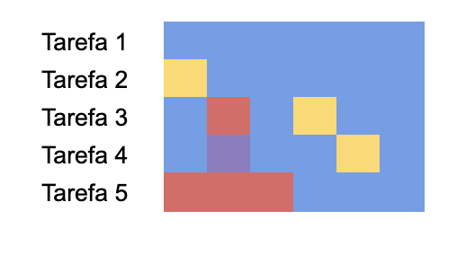
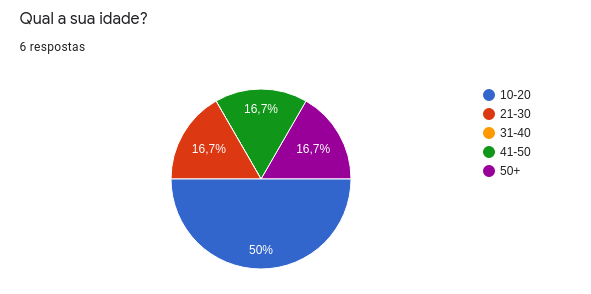
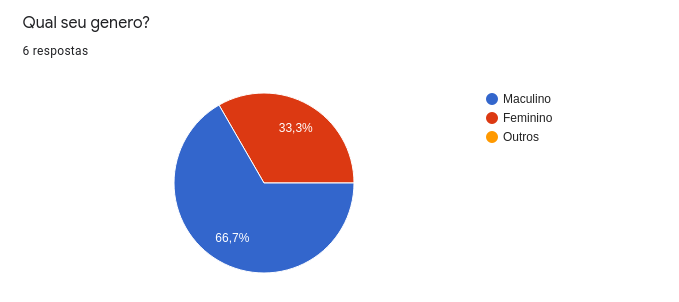
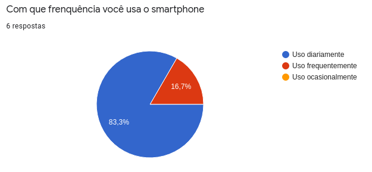

Testes de Usabilidade
| Autor | Mudanças | Data | Versão |
|---|---|---|---|
| Victor Buendia | Criação do documento; Adição de introdução, roteiro, preparação, cenário e tarefas. | 11/03/21 | 0.1 |
| Gabriel Sabanai e Victor Buendia | Adição do tópico de avaliação e resultado | 11/03/21 | 0.2 |
| Gabriel Sabanai | Adição de gráficos e dados finais. | 14/03/21 | 0.3 |
| Victor Buendia | Correção de erros gramaticais. | 15/03/21 | 0.4 |
Introdução
Os testes de usabilidade são importantes para garantir uma boa experiência do usuário no uso do PRODUTO. Sua importância está ligada com a viabilização da avaliação, dividida em três etapas: Simplicidade, que diz respeito à facilidade de utilizar e entender uma tarefa; Usabilidade, que diz respeito à experiência ao se realizar a atividade; e o Design, que diz respeito à questões estéticas e de layout.
Roteiro
Para o teste de usabilidade, são definidas as principais tarefas a serem realizadas no sistema com o intuito de avaliar simplicidade, usabilidade e design. O foco do teste é conferir a usabilidade do sistema com base no desempenho do usuário ao executar tarefas e resumir os resultados para que possam ser usados para redefinir requisitos e melhorar a experiência do usuário, de modo que o sistema seja tão intuitivo quanto possível. Além disso, o teste também é usado para determinar se os recursos da versão testada pelos voluntários estão prontos serem colocados na produção.
Preparação
A fim de participar do teste, é necessário ter acesso ao protótipo de alta fidelidade do MVP do PRODUTO através deste link. Uma outra alternativa é escanear o código QR abaixo com o celular.
Cenário
O cenário é usado para guiar o usuário na imersividade do teste da aplicação.
Você está em casa em Ceilândia e decide ir visitar seus pais em Santa Maria no DF. No caminho da casa dos seus pais, você se depara com um buraco enorme no qual seu carro acaba entrando e causando uma enorme perturbação. Logo em seguida, você sente-se indignado e resolve realizar uma denúncia no aplicativo que você baixou por recomendação dos seus amigos: Eccoar.
Tarefas
- Tente acessar o aplicativo com o seu celular;
- Crie uma denúncia no aplicativo;
- Abra uma denúncia e veja sua especificação;
- Confirme uma denúncia existente;
- Coloque o aplicativo em modo claro.
Avaliação
Essa etapa consiste em fazer uma media da avaliação dos usúarios levando em consideração três parâmetros principais, sendo eles:
-
Simplicidade: Diz respeito à facilidade de utilizar a aplicação;
-
Usabilidade: Diz respeito à intuitividade e boa experiência ao realizar a atividade;
-
Design: Diz respeito à questão estética e de layout da aplicação.
A avaliação consiste em perguntar ao testador sua opinião em relação a cada um dos tópicos previamente mencionados, requisitando uma nota de 0 a 10. Ademais, deve-se levantar uma avaliação geral da aplicação em si.
Além disso, observou-se a dificuldade para concluir as atividades propostas aos voluntários no teste classificando-as como:
-
Azul: Indica que o usuário concluiu a tarefa sem dificuldades.
-
Amarelo: Indica que o usuário teve uma leve dificuldade ao concluir a tarefa.
-
Roxo: Indica que o usuário teve um problema ao concluir a tarefa.
-
Laranja: Indica que o usuário teve bastante dificuldade para concluir a tarefa.
-
Vermelho: Indica que o usuário não conseguiu concluir a tarefa e desistiu.
Resultado
Perfil dos Usuários
Antes de realizar os testes, fizemos uma coleta sobre as idades, gêneros e a frequência de uso de celular de cada voluntário. Obtemos o seguinte panorama:
Resultados dos Testes
Segue aqui o resultado de todos os testes realizados:
| Nome do Testador | Simplicidade | Usabilidade | Design | Aplicação |
|---|---|---|---|---|
| Roseli Rodrigues | 10 | 10 | 6 | 8 |
| Miguel Cruz | 8 | 10 | 8 | 8 |
| Thiago Natan | 8 | 10 | 6 | 10 |
| Leonardo Fagundes | 9 | 8.5 | 8.5 | 8 |
| Lucas Moura | 8 | 9 | 10 | 10 |
| Amanda Carneiro | 9 | 10 | 10 | 9.5 |
| Média | 8.6 | 9.5 | 8 | 8.9 |
Dentre alguns comentários de melhora, foram levantados:
- As imagens poderiam ter um contraste melhor definido, especialmente no vermelho e cinza;
- O título foi mal interpretado como uma descrição pessoal do problema da pessoa;
- A categoria não ficou clara;
- O botão de continuar ficou escondido e gerou dificuldade nos usuários;
- O botão de modo claro não aparece na maior parte dos dispositivos;
- Não ficou intuitivo abrir as denúncias dos outros e confirmar denúnciar, apenas criar denúncias;
- Os botões laterais de confirmar denúncia não estavam muito claros do pra que servia;
- Seria interessante ter um tutorial rápido ensinando a usar a aplicação;
- Achou a imagem da tela de fundo com qualidade baixa.
O mapa de cores resultante pode ser visto abaixo. A legenda encontra-se nesta seção.

Usuários
Idade

Gênero

Uso de Aplicativo
